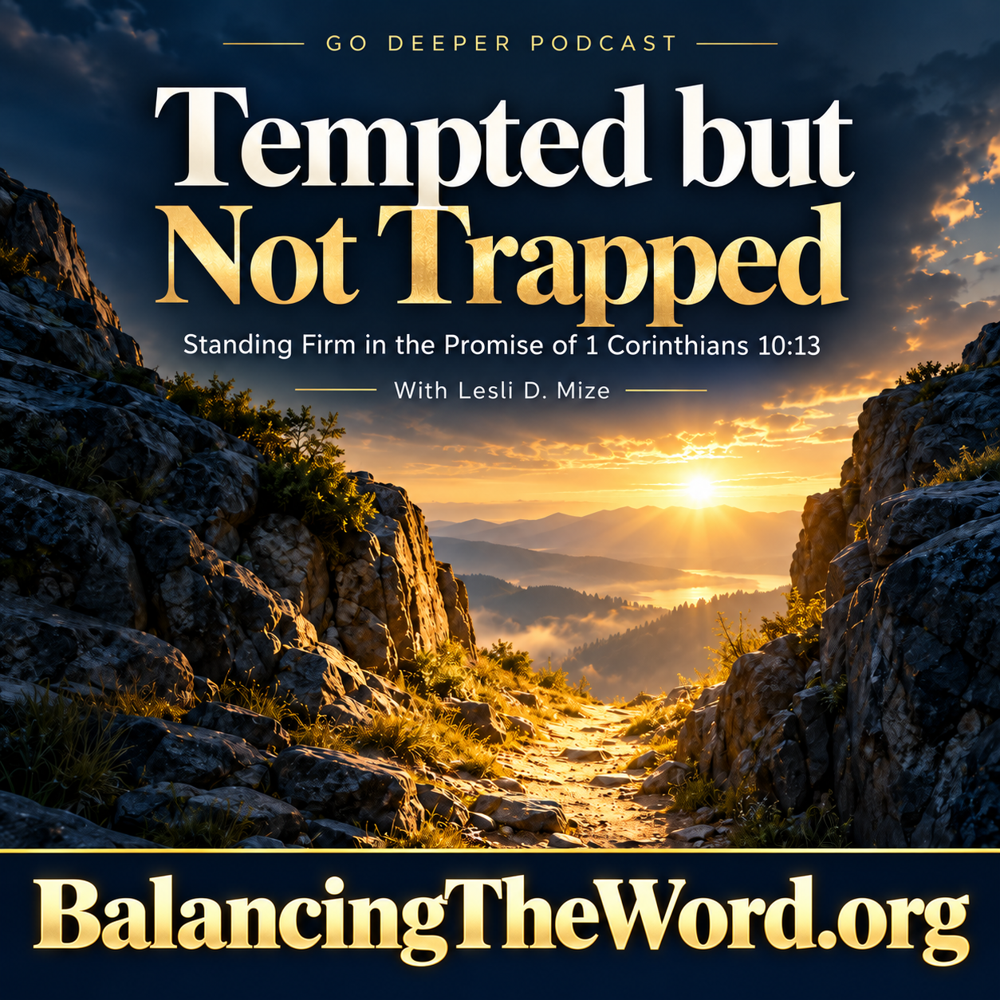

Companion Teaching • Go Deeper Podcast
Tempted but Not Trapped
Standing Firm in the Promise of 1 Corinthians 10:13

Listen to the Go Deeper Podcast
Discover how God’s faithfulness, His promised way of escape, and the truth of 1 Corinthians 10:13 equip believers to resist temptation and stand firm.
This episode accompanies “When the Tempter Speaks” and takes a closer look at God’s promise that temptation never leaves believers without His faithful provision and a way to endure.